Core · Video walkthrough
Configure call, record and document numbering
Choose patterns, fiscal-year rules and forward-only counters, then verify newly issued numbers.
Before you begin
- Use the fictional Chicago Fire demonstration department and disposable training documents.
- Have department configuration permission; Records must be available with records-settings access.
- Record existing patterns and next numbers before making changes.
- Use isolated training calls and clearly labeled training work requests; do not issue or send real financial documents for practice.
Chapters
Watch the walkthrough
Step 1
Find the three numbering areas
Numbering helps people connect an item with its operational process. In our Chicago Fire demonstration department, calls, records and work orders have separate settings. From Department Settings, open Calls & Dispatch, then Call Settings for calls. Document Numbering is under Customization. For records, open Records, expand Manage and choose Settings. Work orders, invoices, bids and daily time reports share Document Numbering. Check the page before editing: saving an invoice pattern does not change call or incident-record numbering.

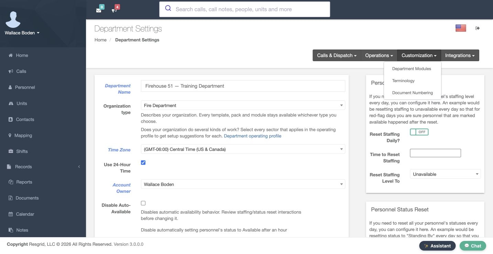
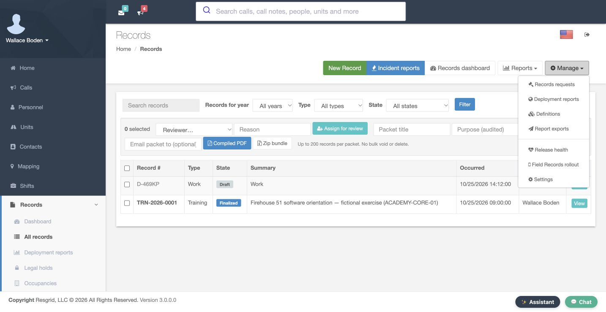
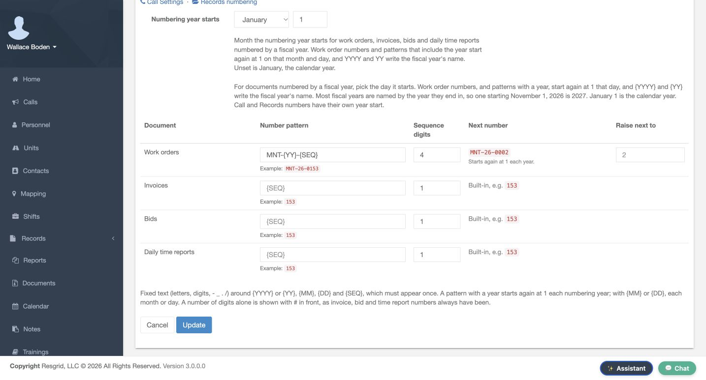
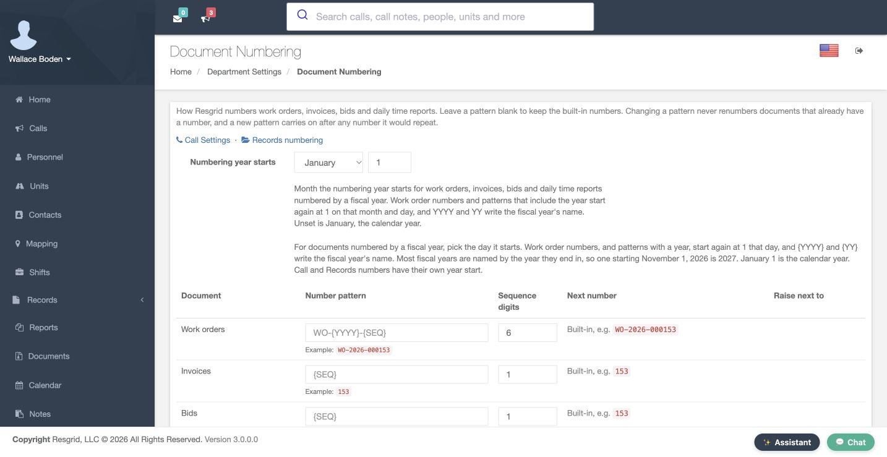
Practice
List which settings page controls each item you plan to number.
Step 2
Set a call pattern
Open Call Settings and scroll to Call Numbering. Our saved pattern is FD51-{YYYY}-{SEQ}: a department prefix, full year and sequence. Sequence digits is four. The inline example uses sample sequence 153, so it reads FD51-2026-0153; that sample is not the next issued number. The sequence token must appear exactly once. Letters, digits and supported separators form the fixed text. Review the example, choose Update and reopen the page to check the stored format before creating a training call.
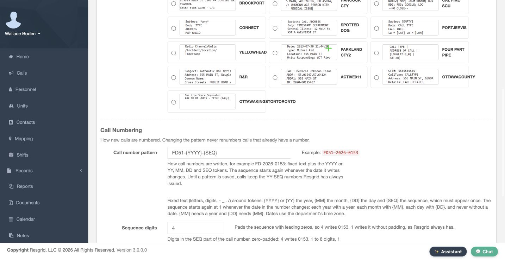
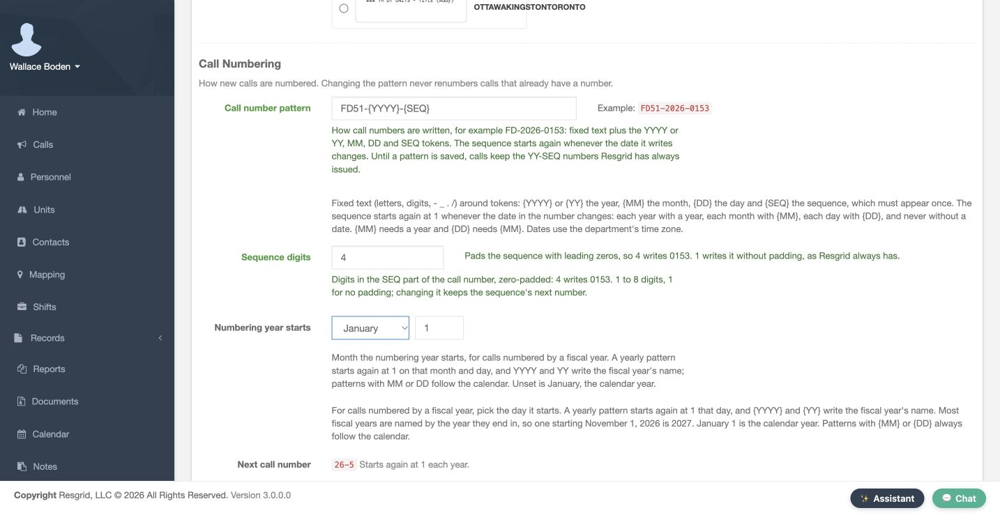
Practice
Choose a clear training call prefix and confirm the preview before saving.
Step 3
Choose the reset period
Read the token guidance under Call number pattern. A year pattern restarts each numbering year. Adding month makes a monthly scope; adding day makes a daily scope. A month needs a year, and a day needs a month. Without a date, the sequence continues without a date-based restart. For example, AC-{YYYY}{MM}{DD}-{SEQ} is a daily format. We keep the saved yearly FD51 pattern here. Dates follow the department time zone, so check that setting before choosing a reset rule.
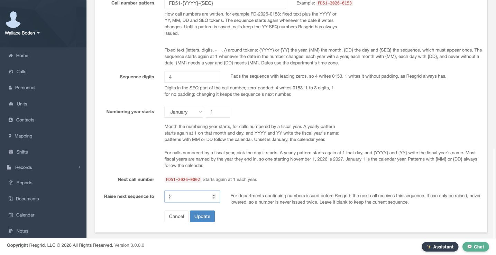
Practice
Explain whether your call sequence resets yearly, monthly, daily or never.
Step 4
Review fiscal-year naming
Review Numbering year starts. Our saved month is January and the day is one, so this example follows the calendar year. A yearly format starts a new sequence at its numbering-year boundary. Before using a different boundary, review the intended year label and the page's help against your department's convention. Monthly and daily call patterns use calendar dates. We are leaving the fiscal settings unchanged and checking the displayed next number.
Practice
Confirm the intended year label for a date just before and just after the fiscal-year boundary.
Step 5
Review the next number and carry-forward control
Next call number is the next value for a call logged now. Saving our new FD51 format started its own scope at 0001; older call numbers remained intact. After the training call received 0001, this page shows 0002. Raise next sequence to is for carrying forward numbers issued before Resgrid. It can only move forward. Save pattern or year-boundary changes first, reopen, then review any separate carry-forward value against the new scope. Leave this field blank when the displayed next number is correct, as we do here.
Practice
Reopen the saved pattern and identify the current next value without lowering or guessing it.
Step 6
Verify an issued call number
In an authorized training exercise, open the saved call and compare its issued number with the format you reviewed. Our disposable training call received FD51-2026-0001. An older call keeps its original 26-format number because a pattern change never rewrites issued numbers. Mixed historical formats can therefore be expected. If a result differs from what you expected, check the local date, numbering-year boundary and scope. Do not create repeated calls merely to force a counter toward the inline sample.
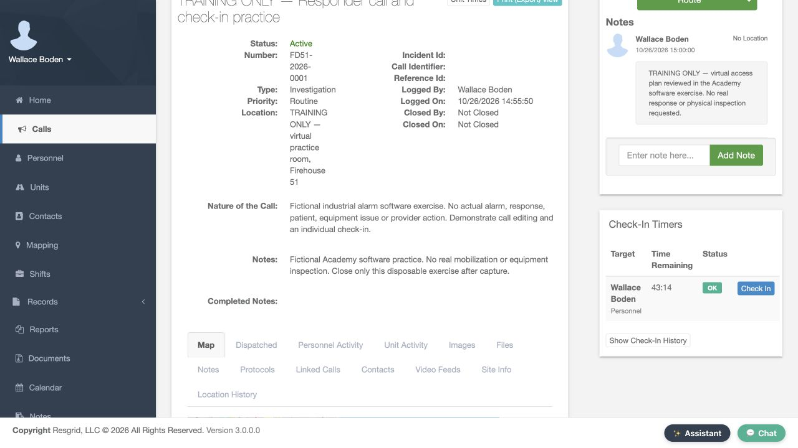
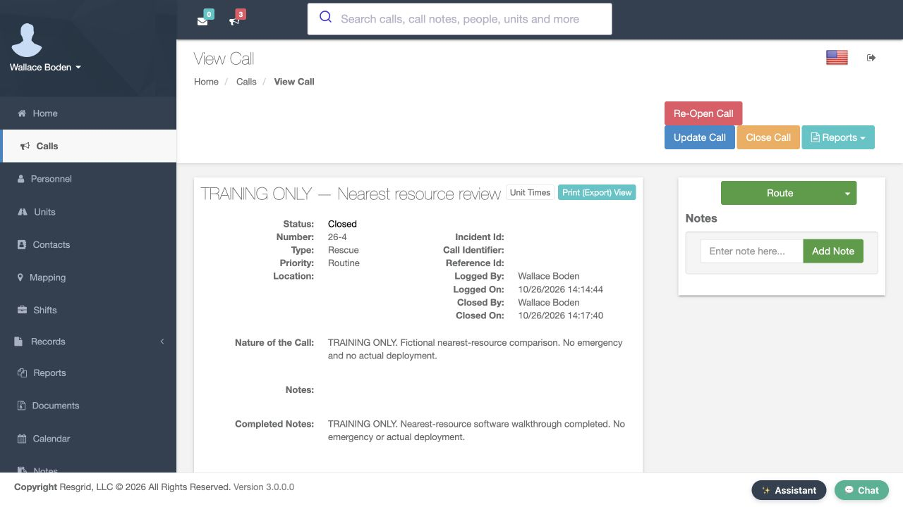
Practice
Compare a newly issued training call number with one that existed before the change.
Step 7
Review record pattern and type prefixes
In Records Settings, find Record numbering. We preserve {PREFIX}-{YYYY}-{SEQ} with four digits and January first. PREFIX uses the record type prefix. Training defaults to TRN when its override box is blank. The next-number table shows TRN-2026-0002 after the existing training record. Prefixes shared by types share a sequence; GROUP can create group-specific scopes and must be followed by a separator. Calls month and day tokens do not belong here. Review stored settings and each relevant next row before changing this separate family.
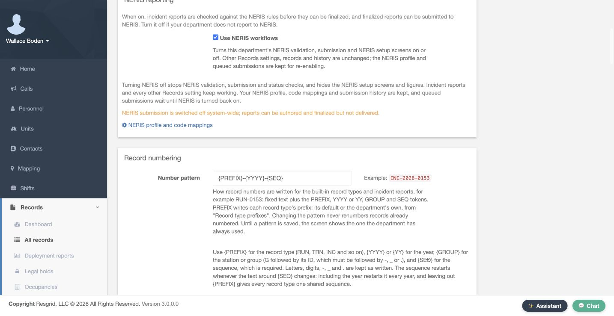
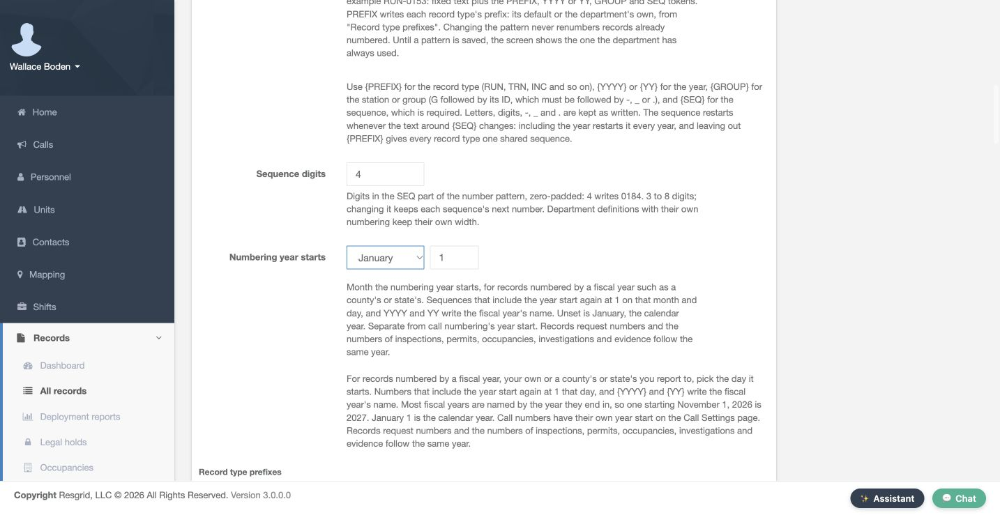
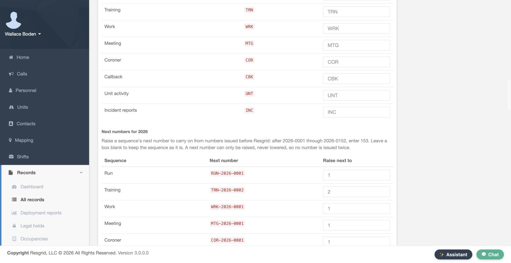
Practice
Identify the preserved Training prefix, four-digit sequence and next value without saving or raising it.
Step 8
Verify a record and its scope
Open the existing training record. Its issued number is TRN-2026-0001, its station is Firehouse 51 and its state is Finalized. The register also has a separate Work draft with a draft reference. These are different types and lifecycle states. A number identifies an item; it does not by itself establish review, approval or external submission. Check the state and history separately. Use an existing safe example when one is available, preserving its original contents and audit trail.
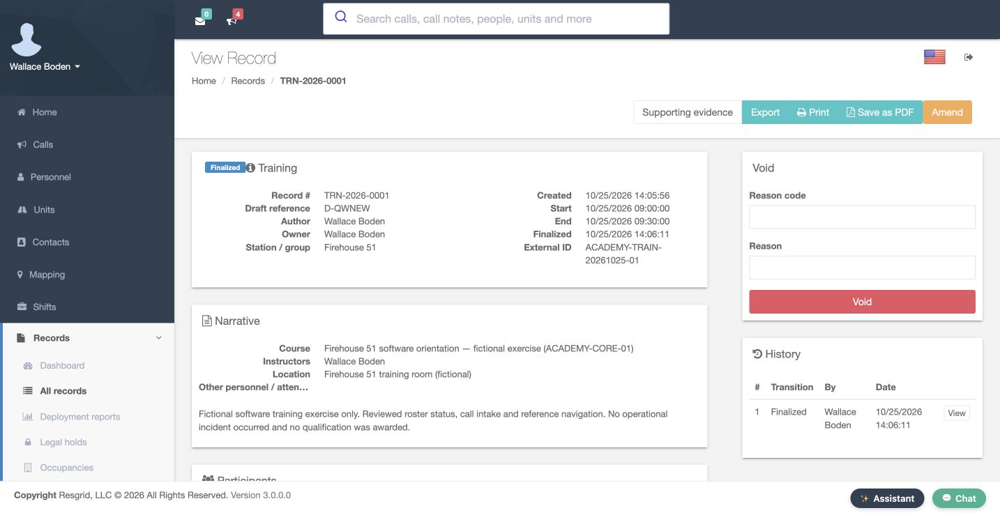
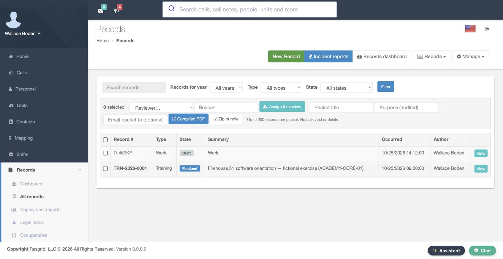
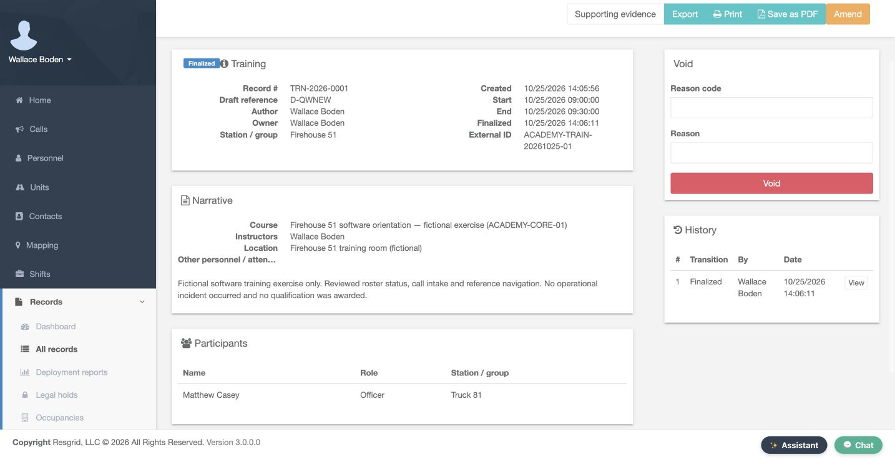
Practice
Create or inspect one training record and identify its definition, group, number and lifecycle state.
Step 9
Configure other document numbers
Open Document Numbering. Each row controls work orders, invoices, bids or daily time reports. For our training work request we saved MNT-{YY}-{SEQ} with four digits, using Update. The sample reads MNT-26-0153, while the saved next value initially read 0001. After the request was issued, it advanced to MNT-26-0002. Invoice, bid and time-report rows retain their built-in formats. This page has its own numbering-year boundary, separate from Calls and Records. Reopen after saving and inspect every row you intended to change.
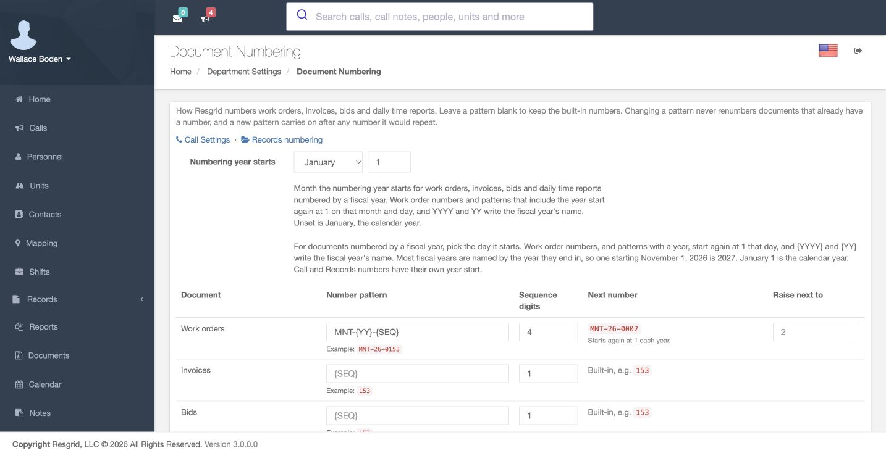
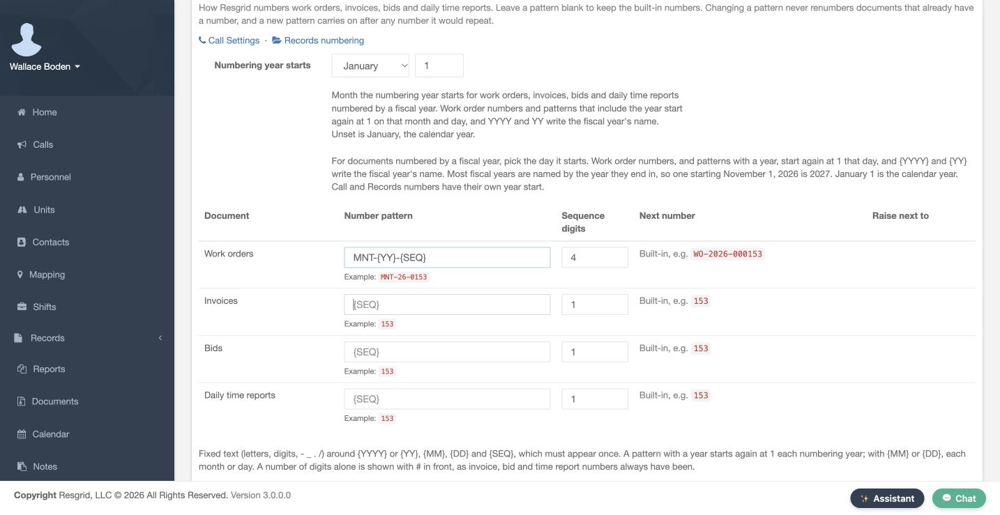
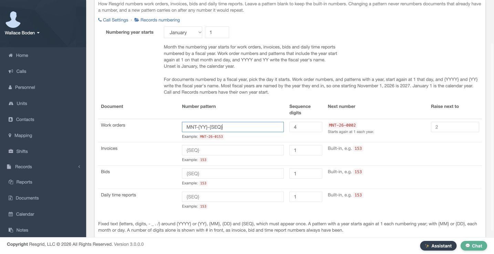
Practice
Configure one document kind and confirm the saved pattern and next number.
Step 10
Check the owning document
The work-order wizard asks what the request is for, its unit or group, costs, safety details and a final review. Our fictional numbering demonstration uses Other, Low priority, no assignment and no costs. Saving creates MNT-26-0001 in Requested state. Reopen its detail and compare the register: older WO numbers remain unchanged. This request is software practice, not a completed repair or safety clearance. Records Settings separately holds request, occupancy, inspection, permit, investigation and evidence numbers. Verify actual saved items for the families you change and retain the chosen reset rules. A community care or mental health team can use a clear follow-up record prefix while keeping service work orders separate. Search and rescue teams can distinguish mission records from equipment requests. Security teams can separate patrol records, work requests and client documents. Wildland contractors can check fiscal-year rules for time reports. Industrial teams can distinguish incident, inspection, permit and maintenance references. In each setting, the identifier describes the item; review its actual contents and lifecycle state separately.
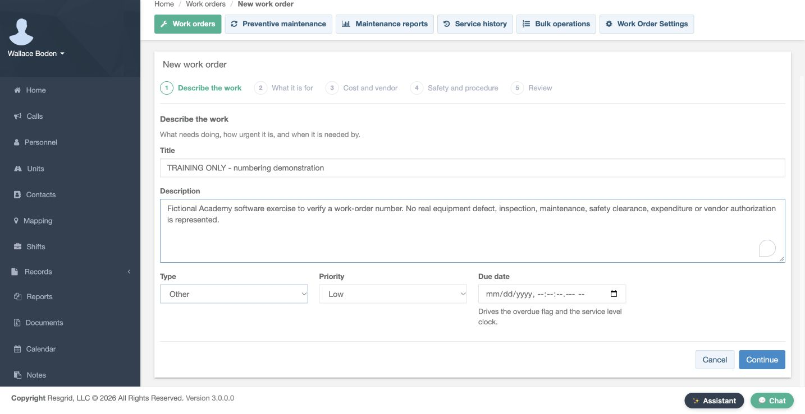
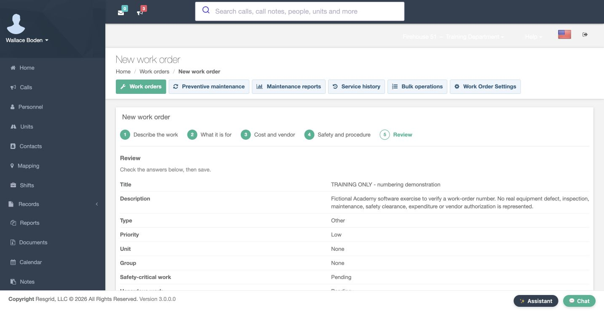
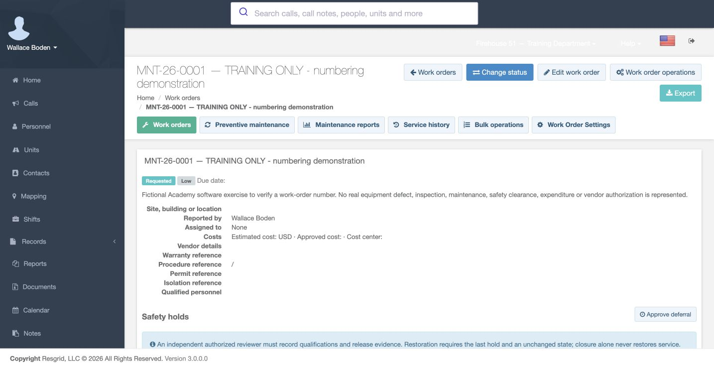
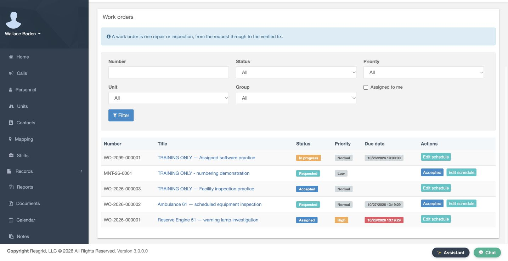
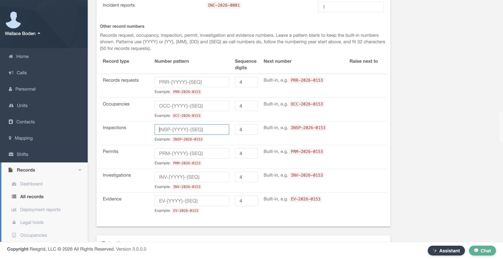
Practice
Record one real training result for each numbering family you changed.
Examples for your department
- Fire / EMS
- Chicago Fire training: FD51 calls, preserved TRN records and MNT software-practice work requests demonstrate separate numbering families.
- Community response
- Mobile crisis teams: use clear visit or follow-up record prefixes without embedding personal information in identifiers.
- Search and rescue
- Search and rescue: align yearly or mission identifiers with the actual record and group scope.
- Security
- Security: distinguish patrol records, client invoices and service work orders.
- Wildland
- Wildland contractors: review fiscal-year labels for work orders and daily time reports.
- Industrial
- Industrial response: separate facility incident records from inspection, permit and maintenance numbers.
Transcript
Download transcriptRead the complete transcript
Configure call, record and document numbering
Audience: Department administrators and records managers
Find the three numbering areas
Numbering helps people connect an item with its operational process. In our Chicago Fire demonstration department, calls, records and work orders have separate settings. From Department Settings, open Calls & Dispatch, then Call Settings for calls. Document Numbering is under Customization. For records, open Records, expand Manage and choose Settings. Work orders, invoices, bids and daily time reports share Document Numbering. Check the page before editing: saving an invoice pattern does not change call or incident-record numbering.
Practice: List which settings page controls each item you plan to number.
Set a call pattern
Open Call Settings and scroll to Call Numbering. Our saved pattern is FD51-{YYYY}-{SEQ}: a department prefix, full year and sequence. Sequence digits is four. The inline example uses sample sequence 153, so it reads FD51-2026-0153; that sample is not the next issued number. The sequence token must appear exactly once. Letters, digits and supported separators form the fixed text. Review the example, choose Update and reopen the page to check the stored format before creating a training call.
Practice: Choose a clear training call prefix and confirm the preview before saving.
Choose the reset period
Read the token guidance under Call number pattern. A year pattern restarts each numbering year. Adding month makes a monthly scope; adding day makes a daily scope. A month needs a year, and a day needs a month. Without a date, the sequence continues without a date-based restart. For example, AC-{YYYY}{MM}{DD}-{SEQ} is a daily format. We keep the saved yearly FD51 pattern here. Dates follow the department time zone, so check that setting before choosing a reset rule.
Practice: Explain whether your call sequence resets yearly, monthly, daily or never.
Review fiscal-year naming
Review Numbering year starts. Our saved month is January and the day is one, so this example follows the calendar year. A yearly format starts a new sequence at its numbering-year boundary. Before using a different boundary, review the intended year label and the page's help against your department's convention. Monthly and daily call patterns use calendar dates. We are leaving the fiscal settings unchanged and checking the displayed next number.
Practice: Confirm the intended year label for a date just before and just after the fiscal-year boundary.
Review the next number and carry-forward control
Next call number is the next value for a call logged now. Saving our new FD51 format started its own scope at 0001; older call numbers remained intact. After the training call received 0001, this page shows 0002. Raise next sequence to is for carrying forward numbers issued before Resgrid. It can only move forward. Save pattern or year-boundary changes first, reopen, then review any separate carry-forward value against the new scope. Leave this field blank when the displayed next number is correct, as we do here.
Practice: Reopen the saved pattern and identify the current next value without lowering or guessing it.
Verify an issued call number
In an authorized training exercise, open the saved call and compare its issued number with the format you reviewed. Our disposable training call received FD51-2026-0001. An older call keeps its original 26-format number because a pattern change never rewrites issued numbers. Mixed historical formats can therefore be expected. If a result differs from what you expected, check the local date, numbering-year boundary and scope. Do not create repeated calls merely to force a counter toward the inline sample.
Practice: Compare a newly issued training call number with one that existed before the change.
Review record pattern and type prefixes
In Records Settings, find Record numbering. We preserve {PREFIX}-{YYYY}-{SEQ} with four digits and January first. PREFIX uses the record type prefix. Training defaults to TRN when its override box is blank. The next-number table shows TRN-2026-0002 after the existing training record. Prefixes shared by types share a sequence; GROUP can create group-specific scopes and must be followed by a separator. Calls month and day tokens do not belong here. Review stored settings and each relevant next row before changing this separate family.
Practice: Identify the preserved Training prefix, four-digit sequence and next value without saving or raising it.
Verify a record and its scope
Open the existing training record. Its issued number is TRN-2026-0001, its station is Firehouse 51 and its state is Finalized. The register also has a separate Work draft with a draft reference. These are different types and lifecycle states. A number identifies an item; it does not by itself establish review, approval or external submission. Check the state and history separately. Use an existing safe example when one is available, preserving its original contents and audit trail.
Practice: Create or inspect one training record and identify its definition, group, number and lifecycle state.
Configure other document numbers
Open Document Numbering. Each row controls work orders, invoices, bids or daily time reports. For our training work request we saved MNT-{YY}-{SEQ} with four digits, using Update. The sample reads MNT-26-0153, while the saved next value initially read 0001. After the request was issued, it advanced to MNT-26-0002. Invoice, bid and time-report rows retain their built-in formats. This page has its own numbering-year boundary, separate from Calls and Records. Reopen after saving and inspect every row you intended to change.
Practice: Configure one document kind and confirm the saved pattern and next number.
Check the owning document
The work-order wizard asks what the request is for, its unit or group, costs, safety details and a final review. Our fictional numbering demonstration uses Other, Low priority, no assignment and no costs. Saving creates MNT-26-0001 in Requested state. Reopen its detail and compare the register: older WO numbers remain unchanged. This request is software practice, not a completed repair or safety clearance. Records Settings separately holds request, occupancy, inspection, permit, investigation and evidence numbers. Verify actual saved items for the families you change and retain the chosen reset rules. A community care or mental health team can use a clear follow-up record prefix while keeping service work orders separate. Search and rescue teams can distinguish mission records from equipment requests. Security teams can separate patrol records, work requests and client documents. Wildland contractors can check fiscal-year rules for time reports. Industrial teams can distinguish incident, inspection, permit and maintenance references. In each setting, the identifier describes the item; review its actual contents and lifecycle state separately.
Practice: Record one real training result for each numbering family you changed.
Examples for your department
Fire / EMS: Chicago Fire training: FD51 calls, preserved TRN records and MNT software-practice work requests demonstrate separate numbering families.
Community response: Mobile crisis teams: use clear visit or follow-up record prefixes without embedding personal information in identifiers.
Search and rescue: Search and rescue: align yearly or mission identifiers with the actual record and group scope.
Security: Security: distinguish patrol records, client invoices and service work orders.
Wildland: Wildland contractors: review fiscal-year labels for work orders and daily time reports.
Industrial: Industrial response: separate facility incident records from inspection, permit and maintenance numbers.